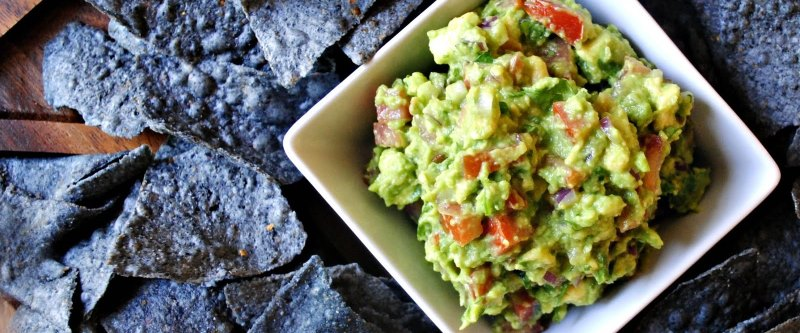

Гуакамоле

- TODO
Авокадо разрезать пополам, достать косточку, с помощью столовой ложки достать мякоть, размять ее вилкой. Выжать на авокадо 1/4 лимона, добавить соль, перец. Порезать мелко помидор, зелень, зеленый лук. Все перемешать.
Подавать намазываю я хлеб, заворачивая в лаваш.
 Назад к списку рецептов
Назад к списку рецептов